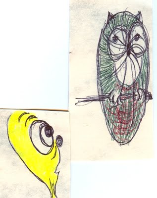

|
Journal - "Creative Conundrums: psychology of creativity"
Being good = praise. Being best... Being "best" means that are completely different than anyone else. Worst, noone has capacity to understand you. This page explores this theme from many angles. Being creative genius in sport: Misunderstood Athletes Being creative genius in art: Ryan by Chris Landreth, National Film Board of Canada Below, Elizabeth Gilbert defines the inherent emotional risks of creativity, and then suggests a protective psychological construct that may reduce the risks. The idea that creativity does not come from you, but is on loan to you, from a source we cannot see but sometimes feel.
OLE: the "genius" that visits creatives from time to time... a way to live with the creative genius
...and here I am with my "genius"... 
more about me... Fixing it Being introvert
FUNCTIONAL LECTURES THAT I LIKE
MOTIVATIONAbout drive. Increasing monetary reward is great for simple tasks, but has reverse effect for cognitively difficult tasks. HAPPINESS 1) Delusional optimism versus reality. Its use in social control. TrolololololoThis is trololo man. A typical delusional happiness method during soviet times. 2) Synthetic happiness SOCIAL PSYCHOLOGY The empathic civilization Journals Home |